Building societal resilience for collective flourishing.
The Cape Institute for Safe AI is a capacity-building and research hub focused on developing d/acc technology in an increasingly uncertain and systemically vulnerable world.
- Research Lab
- Open Workspace
- Residency Programs
- Fieldbuilding Events

What we do.
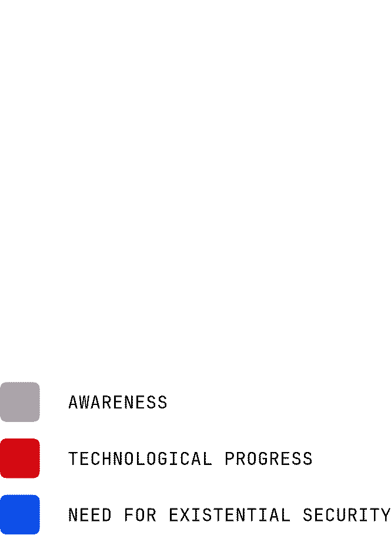
The Cape Institute for Safe AI (CISAI) is a capacity-building and research hub focused on developing d/acc technology in an increasingly uncertain and systemically vulnerable world. We believe that AI will be the most transformative technology of our lifetime, but that it won't necessarily be for the good. To enable the benefits of this technology, we must develop the infrastructure required to mitigate the risks from AI. We believe that the most effective way to pursue this mission is in building centers of excellence where the emerging fields of AI safety, security, and risk management can be developed, where talent can be upskilled, and where the public can engage with these topics. We believe that there are disproportionate benefits of building these hubs as they can act as Schelling points: natural targets around which interested parties can coordinate without top-down direction.
History
CISAI is the next iteration of AI Safety South Africa (AISSA). AISSA has spent the past two years building the AI safety ecosystem in Cape Town, and South Africa more broadly. In 2025, AISSA grew from a two-person founding team into a hub running active research programs, capacity building initiatives, and partnerships with leading international institutions including the UK AI Security Institute (AISI), ILINA, and the Cooperative AI Foundation.
What we are researching.
Already, AI agents are being let loose on the internet without regulatory oversight. We expect the number of agents on the internet to scale rapidly, and for there to be unique failure modes associated with these large systems of heterogenous agents. This is why we are currenly building a lab with a focus on multi-agent safety. Previously, we have worked with the UK AI Security Institute to develop novel methods for measuring agentic capabilities and with Google DeepMind and the Cooperative AI Foundation to understand how agents may fail in multi-agent settings.

Multi-agent
Many existing AI safety institutions focus solely on single-agent risks. We believe this is a myopic approach to safety, and that large systems of AI agents pose unique risks that need to be studied and mitigated.
Multi-polar
We observe that the frontier of AI development is highly competitive between multiple developers, and believe that extreme power concentration as a result of AI development constitutes a likely and catastrophic risk. As such, we are interested in safely distributing AI capabilities.
Defense-in-depth
We think that providing many layers of safety and security safeguards will be necessary to prevent and mitigate the failures of AI systems and protect our civilisation.
How we are stewarding a movement.
We're looking to develop top talent globally, but especially in developing economies and South Africa. Existing efforts on capacity-building are mainly focused in the US and Europe, and we believe that there is phenomenal talent in Africa that is not being tapped into. We aim to change that, and bring the brightest minds in our network together, while building global networks.
Open Workspace
We offer premium workspace for professionals working in d/acc related fields, or who are transitioning into careers in these fields. Here, you'll be able to interact with members of our research lab and community, providing opportunities for knowledge exchange and idea generation. Our workspace is located in central Cape Town, and we offer discounted rates upon request.
Applications open!Research Residencies
We run structured programs for talented researchers to develop within d/acc related fields. Previously, we ran the Cooperative AI Research Fellowship, a 3-month in-person all-expense paid program where we connected fellows to senior researchers at Google Deepmind, Oxford, MIT, and more.
See our most recent fellowship here.Fieldbuilding Events
We regularly host fieldbuilding events, including reading groups (hosted at our workspace), hackathons, talks, and workshops. We maintain a vibrant network of community members who regularly attend our events. This is a vital part of building a movement towards greater awareness and capacity for responding to the civilisational transition that we find ourselves in.
Sign up to our events calendar here.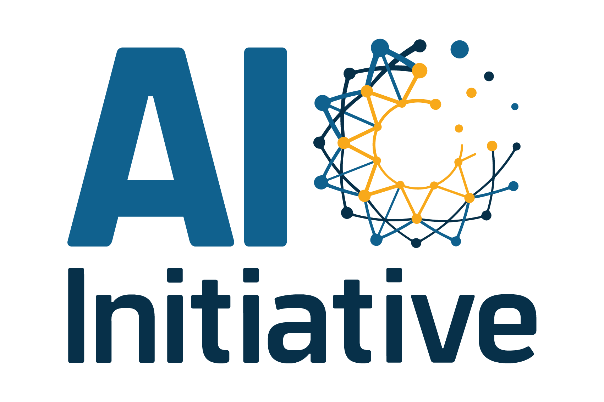
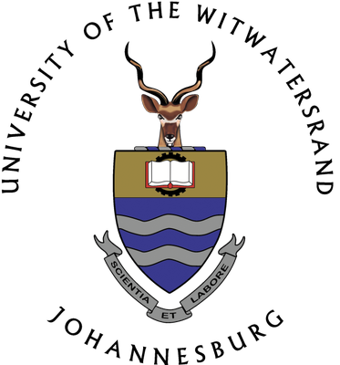
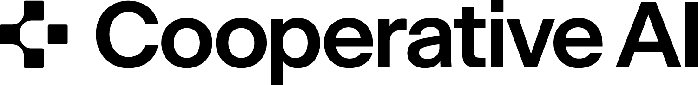
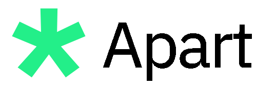
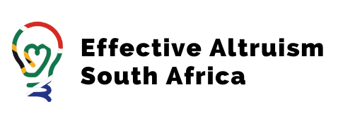
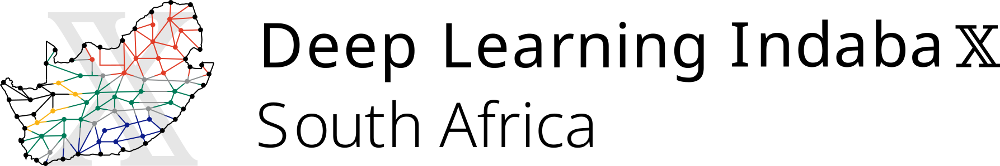
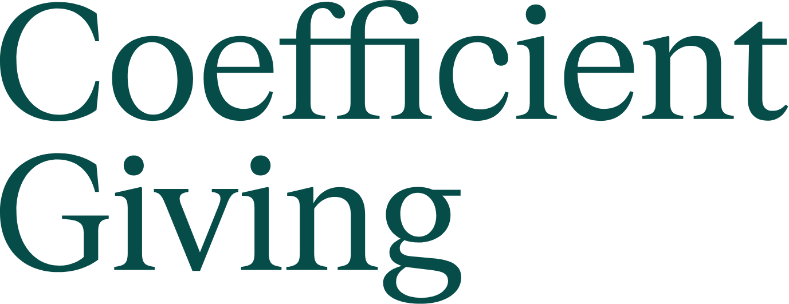
Who we are.
We are a tight-nit team with a strong culture. We balance the seriousness of our mission with light-heartedness, mindfulness, and care.
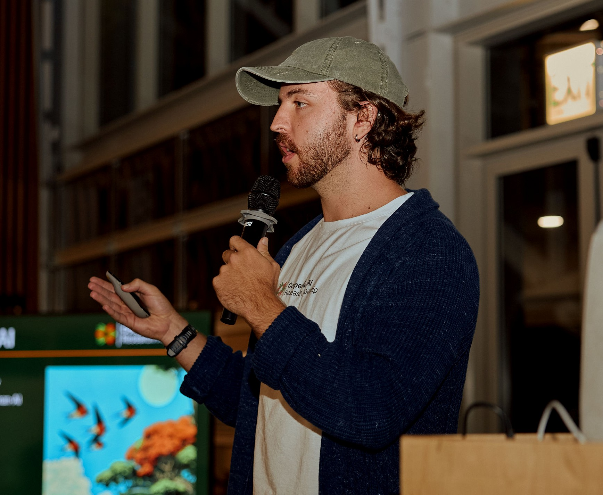
Leo Hyams
Founder, Executive DirectorLeo has grown CISAI from a local group of researchers into a fully-funded institute working with globally relevant institutions and researchers. His role includes fundraising, culture, strategy, and manages stakeholder relationships, finances, and the team. He is also passionate about design: he made this website and the associated visual assets :)
LinkedIn →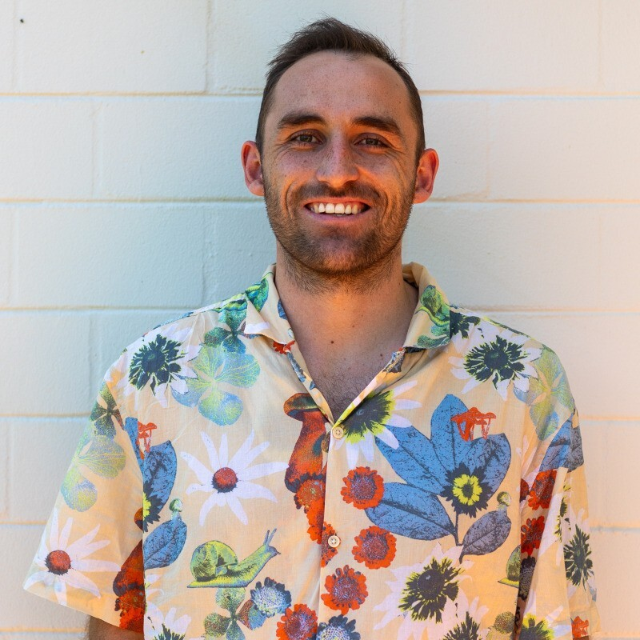
Claude Formanek
Research DirectorClaude's research focus is on understanding the unique risks pertaining to multi-agent AI systems. He holds a PhD from the University of Cape Town, supported by a Cooperative AI Foundation PhD Fellowship, specialising in Offline Multi-Agent Reinforcement Learning. He has published in several top venues, including NeurIPS, ICLR, and ICML, and brings five years of industry experience as a Senior Machine Learning Research Engineer at InstaDeep.
LinkedIn →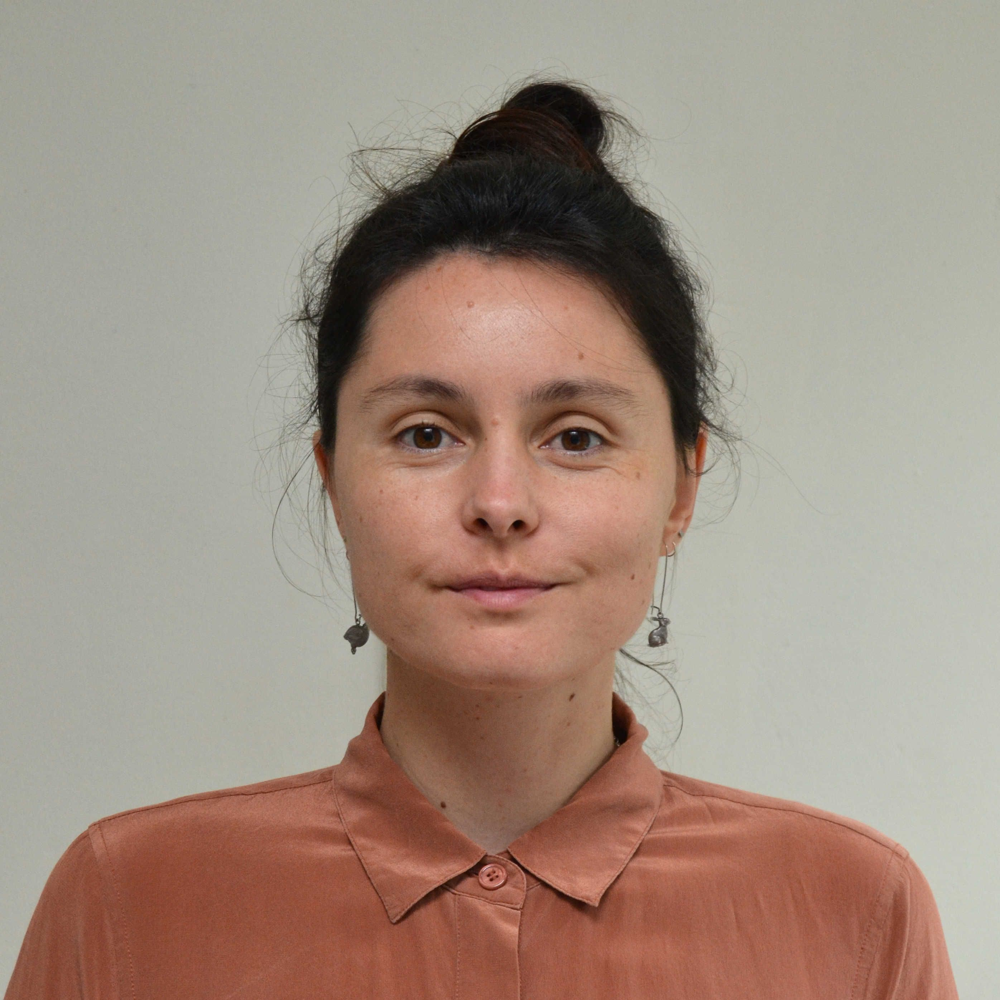
Tegan Green
Operations DirectorTegan is a strong generalist who uses her significant project management experience to design and run exceptional programs at CISAI. She has a particular focus on improving the end-to-end experience of interested individuals that interface with CISAI, drawing on her experience as a UX designer. She has a strong interest in research too, regularly facilitating reading groups, and is curious about promoting human agency and understanding digital minds.
LinkedIn →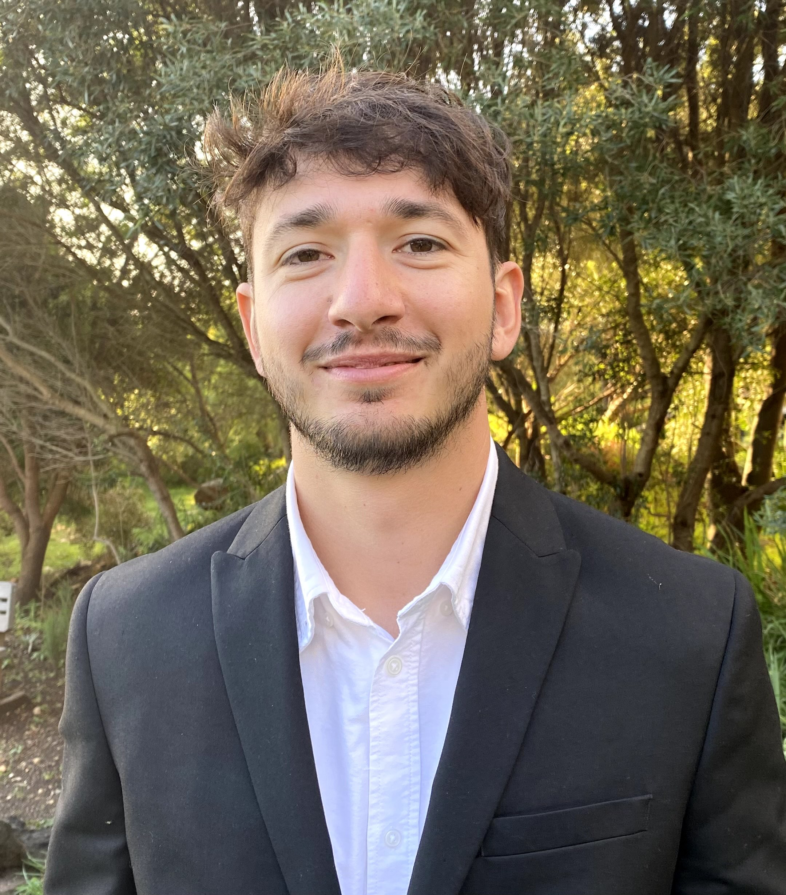
Jaco Du Toit
Evaluations LeadJaco is a machine learning engineer and researcher, focused on AI capability evaluations. He has worked with the CISAI team to develop many evaluations for the UK AI Security Institute. He is a lead author of AI safety research published at NeurIPS and was a lead reseacher on the research grant that CISAI won from the UK AI Security Institute, where he worked closely with their Science of Evaluations team.
LinkedIn →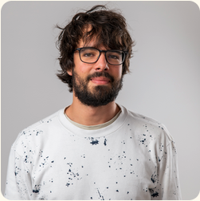
Benjamin Sturgeon
Strategic AdvisorBen co-founded AI Safety Cape Town (the organisation that would become CISAI) with Leo in 2024. He is an AI safety researcher who recently completed the MATS fellowship, working with researchers from the UK AI Security Institute. He is currently on a research fellowship associated with the Centre for Long-Term Risk.
Website →Reach out to us here.
Message sent. We'll be in touch.